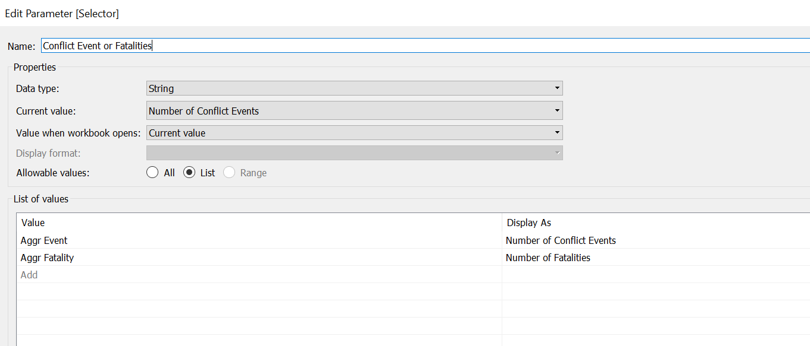
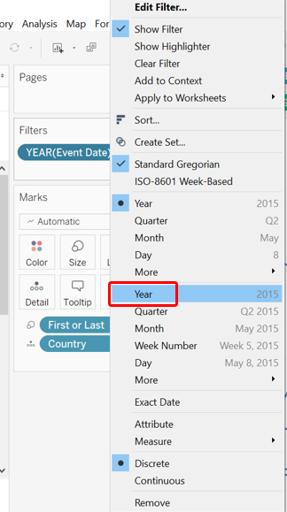

The original visualization using the data available is appended below:

Section A: Critique of Original Viz
This section provides a critique of the original visualization and comments on both clarity and aesthetic aspects that could be further improved on. A total of 10 clarity issues and 8 aesthetic issues were identified.
Clarity
| S/N | Issue | Comments |
|---|---|---|
| 1 | ||
| 2 | ||
| 3 | ||
| 4 | ||
| 5 |
Aesthetic
| S/N | Issue | Comments |
|---|---|---|
| 1 | ||
| 2 | ||
| 3 | ||
| 4 | ||
| 5 |
Section B: Suggested Improvement
This section provides some suggested improvements that could be implemented to resolve issues discussed in Section A.
Clarity
| S/N | Issue | Suggested Improvements |
|---|---|---|
| 1 | ||
| 2 | ||
| 3 | ||
| 4 | ||
| 5 |
Aesthetic
| S/N | Issue | Suggested Improvements |
|---|---|---|
| 1 | ||
| 2 | ||
| 3 | ||
| 4 | ||
| 5 |
Discussion on Likert Scale Visualization
Discussion on Visualization of Uncertainty
Makeover Concept
Taking in the points discussed above, a redesigned visualization could look like the following:

Addressing Clarity Issue
| S/N | Issue | Ways in which proposed viz resolve issues identified |
|---|---|---|
| 1 | ||
| 2 | ||
| 3 | ||
| 4 | ||
| 5 |
Addressing Aethetic Issue
| S/N | Issue | Ways in which proposed viz resolve issues identified |
|---|---|---|
| 1 | ||
| 2 | ||
| 3 | ||
| 4 | ||
| 5 |
Section C: Redesigned Visualization
Using Tableau, the redesigned visualization based on the discussion points and concept presented in Section B above is created as follows:

The redesigned visualization can also be accessed via this link
Section D: Step-by-Step for Viz Makeover
This section provides a step-by-step guide to recreate the redesgined visualization.
Part 1 - Data Preparation
Step 1.1 - Importing Data
After downloading the Southeast Asian 2010-2020 dataset, open up Tableau Desktop then drag-and-drop the downloaded Excel file onto a new tableau main page.
We can leave most of the data as-is, since they are relatively clean. We proceed to open up a new Worksheet in Tableau. Once that is done, we will quickly realise that Tableau automatically classified many of the numerical variables as Measures. We will need to shift these to become Dimensions. click on the following Measures while holding down the Ctrl key:-
- Event Id No Cnty
- Geo Precision
- Inter1
- Inter2
- Interaction
- ISO
- Time Precision
These variables are shifted to Dimension as their numerical values are codes representative of something and their numbers do not have any ordinal or nominal value.

Part 2 - Creating Interactive Geospatial Dot Density Plot with Proportional Symbols
Step 2.1 - Base Map
The very first step to creating a geospatial visualization is to create a base map. The dataset conveniently came along with Longitudinal and Latitudinal data to map out where each of the conflict event happened; Tableau on the other hand, made it even easier by automatically recognizing that these variables have geographical role and assigned them to their correct lat-long meaning based on their name. We now drag the Longitude to Columns, and Latitude to Rows.
Step 2.2 - Basic Dot Density Map
We create a basic dot density map by drag-and-dropping Event Id Cntyonto the Detail tab. As with any one-to-one dot density map, each of the resulting dot represents one count of the variable - in this case, a conflict event. We further enhance the map by introducing another variable - Event Type - onto the Color tab. This added dimension allows viewers to identify the type of event (e.g.Battle, Protest, Riot) associated with each event.

Step 2.2 - Proportional Symbols
Knowing the type of events and their concentration in a particular geo-spatial location is informative - however, not all events are of equal concerns: while some of the dots denotes relatively civilized encounters (e.g.peaceful protests, arrests of key politicians without any casualties involved), some are way more violent (e.g.battles, explosions). In this aspect, the dataset provides an appropriate variable - the number of Fatalities. To show the relative impact of each event proxied by the number of people killed during the event, we drag-and-drop the measure Fatalities onto the Size tab - the size of each dot would then provide the relative destruction (in human-life terms) of each event: the bigger the circle, the more lives the event claimed (and hence more impactful), and the smaller the inverse, the lesser the impact.

We do note that the circles are still relatively similar in size, and they are all very close together such that we are unable to distinguish dots that are overlapping. We do two further changes to enhance the dots appearance:

First we enlarge the circle by first clicking on the Size tab, then sliding the slider to the right.
Next, we reduce the opacity by first clicking on the Color tab, then change the Opacity to 50%.
Step 2.3 - Interactivity - Filters
Country
Notice that we have also included Country as a Filter (by drag-and-dropping the Country pill into the Filters tab) at this point, which will be useful later on (remember to click on the small triangle beside the blue Country pill in the Filter tab, then check Show Filter for the filter to appear on the right-hand pane).
Event Type
We do the same to Event Type. Then we change both of these filters into Single Value (Dropdown) list.
Actors
We also want to create a filter based on the interacting actors. To achieve this, we first have to create a few intermediate variables. First, we create a new string field called Inter1_recoded that spells out what each of the coded number in Inter1 means
We do likewise for Inter2 to create Inter2_recoded.
Lastly, we string these two variables together to create variable Actors that tells us the pair of actors in each conflict
Similarly. we then drag-and-drop the Actors variable onto the Filter pane and change the type to Single Value (Dropdown).
Step 2.4 - Aesthetics
Map Background
We next work on the aesthetics of the viz.First, the map background. While the default background is alreayd using the Light style, the background can be further faded to enhance the contrast between the various dots and the landmasses. This can be done by first clicking on the Map option on the options bar at the top, then selecting Map Layers from the drop-down list. At the washout option, change the percentage to 40%.

Title
Next, we double click on the title to change it to the following.

Step 2.4 - Tooltip
We want viewers to be able to extract more information when they hover their mouse over - so we add in a customized Tooltip that can provide them just that.
First, we create a new field that forms proper phrases with the parties involved - Actors_in_phrase.
When there are no second actor, the variable will just return that an event was conducted by
When the second actor is either civilians or protesters, it means someone had done something to these people, and hence, by
And finally, when there are two non-civilian non-protesters actors (e.g.State Forces and Rebel Groups), the events are conducted by these two actors jointly
Once that is done, we drag-and-drop the relevant fields into the Tooltip tab - for this Tooltip, we will need the following variables:
- Actors_in_phrase
- Admin1
- Country
- Event Type
- Notes
- Sub Event Type

And lastly, we double click on the Tooltip tab, retain the relevant variables, and edit the Tooltip as follows:

We now have an informative geospatial dot density map of conflict events with proportional representation of the fatalities.

Part 3 - Animating Changes on Geospatial Map
While interactive and information, the geospatial map does not make good use of the rich temporal data that the dataset provides. To better visualize change, animation can be included to present a viz that shows the conflict event by time.
This is relatively straight forward in Tableau: first, we drag-and-drop the Event Date variable onto the Pages tab

Next, go to the Format tab on the tool bar, select Animation from the drop-down, then turn Workbook Default On. Change the Duration to 0.50 seconds (Medium) and Style to Sequential if not already done
Part 4 - Visualizing Change using Slopegraph
We next open up a new Worksheet to create the second portion of the overall viz visualizing change using the Slopegraph.
Step 4.1 - Data Preparation & Variable Creation
As usual, before we dive straight into creating the viz, we will do some data wrangling and create some useful variables first.
Year
By default, the Year variable is of numeric dimension type, we will first need to change it to the proper Date type.
Aggregating Events
Next, we create a variable that counts the number of events. Without any further specification to the formula, Tableau will include data entry for the count according to the filters applied.
Aggregating Fatalities
We also create another similar variable, this time round to sum up the fatalities

Selector
We have two types of change that we can visualize - number of events and number of fatalities. We want to allow viewers to be able to toggle between these two variables to distill relevant insights. We do that by creating a Parameter. Parameters can be created by right-clicking the blank space under the Data tab on the left-most panel and selecting the Create Parameters option. We call this Parameter Conflict Event or Fatalities, taking in String data type with the following list of values:

After that, we create a variable called Selected that takes in the option selected by the viewers via the parameter:
Delta & Direction
We create a variable Delta that informs us on the change in the numbers (positive if increase, negative if decreased).
We then use Delta to find out the direction of movement of the numbers of conflict event/fatalities between any two years by creating the following Direction variable

First or Last
Finally, we create a variable called First or Last - this variable will be useful in allow us to show a line on the Slopegraph for only the starting and ending year; where either one is missing, the data point will only appear as a dot.
Step 4.2 - Creating Basic Slopegraph
To create a basic Slopegraph, drag-and-drop the Event Date dimension to Columns, the Selected variable (that takes in user selection of either number of fatalities or events) into Rows, and Country into the Detail tab.

But wait this looks like a normal line graph and not slope graph! Recall earlier we mentioned the need to include the First or Last variable, now is the time. We drag-and-drop it onto the Size tab.

Next, we go to the right hand panel where we find the AGG(First or Last) pane; we right-click on the False legend, and select Hide

This way, we should see the lines taking shape, with only two columns, one for the starting year, and one the ending. With this, we would also want viewers to be able to change the start and end year.
Step 4.3 - Year Filter
And that brings us to the creation of a Year filter.
We first drag-and-drop the Event Date variable onto the Filter pane. A pop-up will appear - we select Years from the option list

Followed by checking the Use all option under the General tab, then click Ok.

We notice that the Year pill under the Filter pane is a dimension (blue pill). We click on the small triangle at the right-end of the blue pill, a list will pop up - we then select the date Year option as shown. The pill should turn green in color.

A window will pop up, and we select the Range of dates option, leaving all the other settings unchanged.
Lastly, we click on the triangle at the right-end of the pill (this time green) again - check on Show Filter
Step 4.4 - Aesthetic Enhancement
Entire View
First thing first, we change the view to Entire View

Chart Labels
Next, we add in labels on both end of the line to enhance clarity. We click on the Label tab, then select Line Ends as the option (see below), unchecking the Allow labels to overlap other marks option, and make sure the option for both Label start of line and Label end of line are checked.

We also want to edit the label to let the country and numbers be in one line
Direction
We make use of colors to make the direction of change more obvious. Drag-and-drop the Direction variable into the Color tab

Double-click on the AGG(Direction) legend pane to edit the color - we want blue to denote decrease (since decrease in conflict event or fatality is good), while red to denote increase in the unfortunate numbers. We select the Blue-Red-Brown palette, then make the appropriate changes. Not Applicable in this case denotes countries where either the start or the end year data is not found (and hence we cannot visualize the change between the two years)

Title Labels
We hide the field labels for columns by right clicking the lable (Event Date), then selecting the Hide Field Labels for Columns option

Next, we edit the y-axis title by right-clicking on the axis title, then selecting Edit Axis, the screen below will pop up - amend the title to Total Number while keeping the other settings unchanged

Title
Next, we change the title to something more accurate by double-clicking on the viz title, and changing it to the following:

Step 4.5 - Tooltip
And finally, we include Tooltip by clicking on the Tooltip tab and making the changes as follows (all variables needed should already be within the original Tooltip):

We now have the final Slopegraph!

Part 5 - Interactive Dashboard
Step 5.1 - Linking Filters
Before we even create the Dashboard, we would need to link up the various filters across the two different sheets in order for the filters to apply across viz from from sheets.
At the Temporal Slopegraph sheet, click on the small triangle on the top-right corner of the Year filter pane. Select the option Apply to Worksheets, then choose Selected Worksheets

Next, check the other worksheet (in this case, Geospatial), in order for this filter to also apply to the geospatial dot density map viz.

Similarly, we return to the Geospatial Worksheet and do the same to the Actors, Country, and Event Type filters.
Step 5.2 - Creating Dashboard
Now we commence with the creation of Dashboard by first clicking on the New Dashboard button at the borron of the viz (beside the Worksheet tabs).
Section E: Observations
Observation 1 -
Observation 2 -
Observation 3 -
Additional Comments